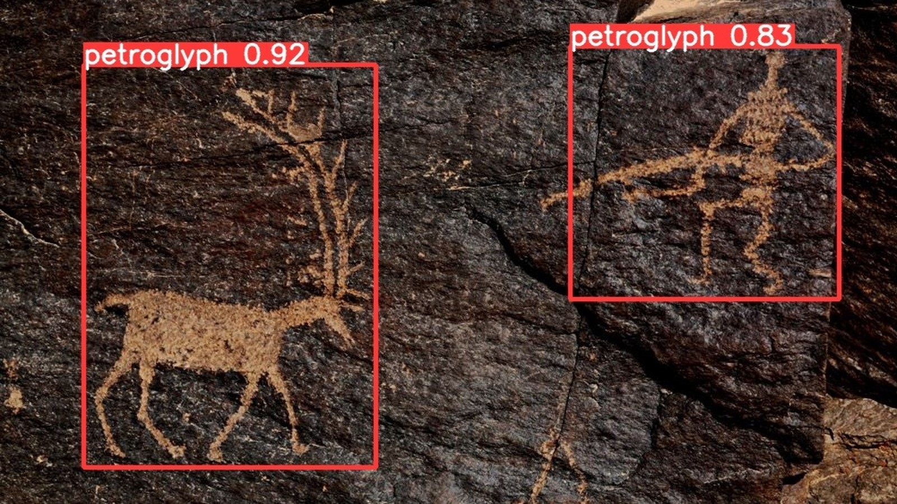
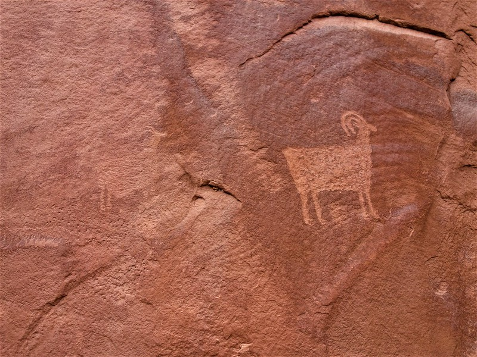
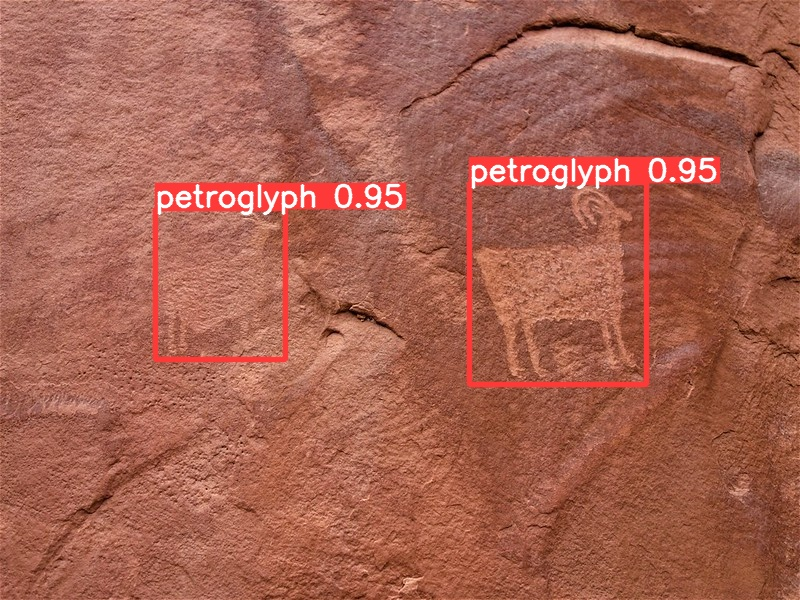
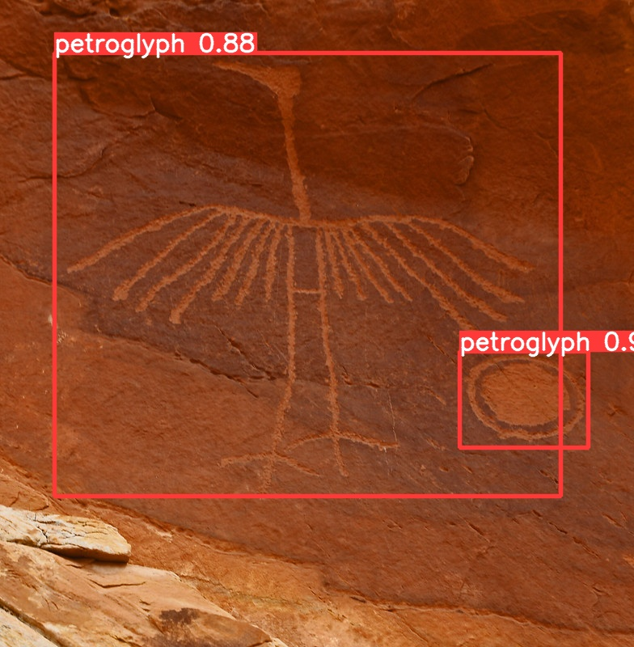
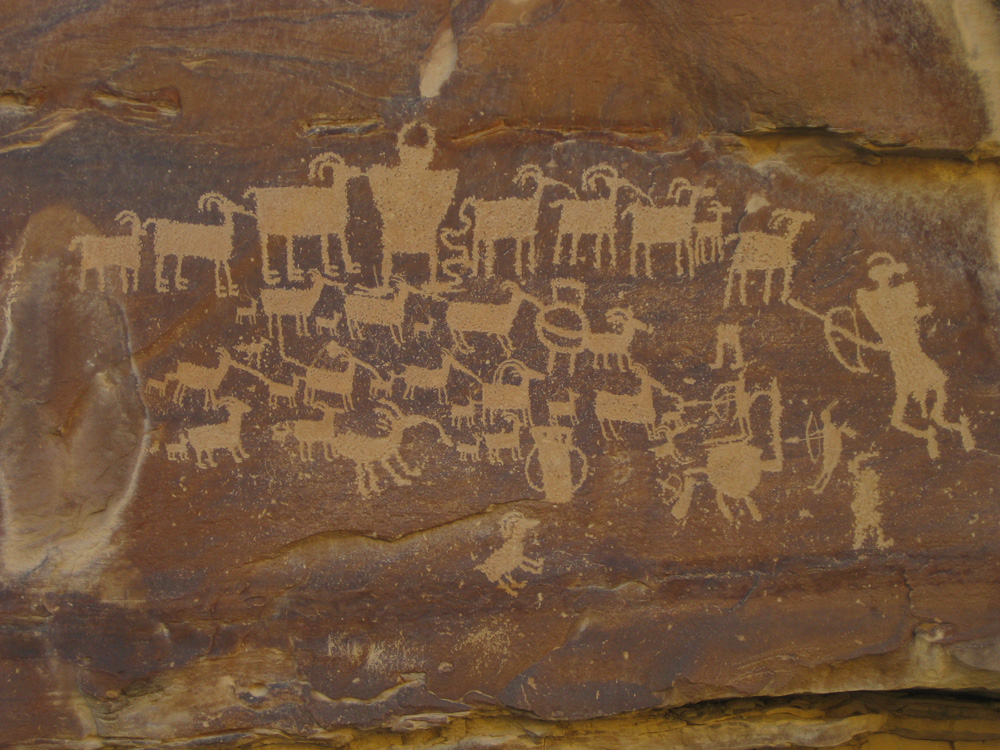
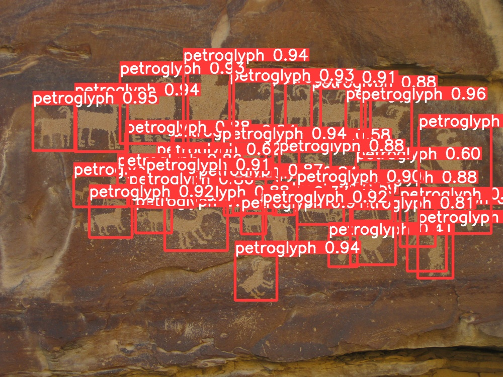

Petroglyph Detection with YOLOv5
This project trains a custom YOLOv5 object detection model to detect petroglyphs in an image. The dataset of 1000 petroglyph images was scraped from Flickr and manually annotated by me. It's intended only as a learning experience in computer vision, not as an academic work.


Several thousand images were downloaded from Flickr, inspected for glyphs, and arbitrarily decided on whether or not to label. Some images showed panels with hundreds of small glyphs; some images showed densely interconnected patterns from which individual glyphs could not be distinguished; many contained isolated dots, lines or splotches; all of which the annotator (me) simply ignored.
The initial assumption was that petroglyphs are made of distinct symbols, like words, and that each individual symbol was delimited by the surrounding space - thus easily placed within a bounding box. But this assumption doesn't really hold up, which made annotating many petroglyphs difficult. Instead I settled for just labeling images with a low number of clearly defined symbols.



